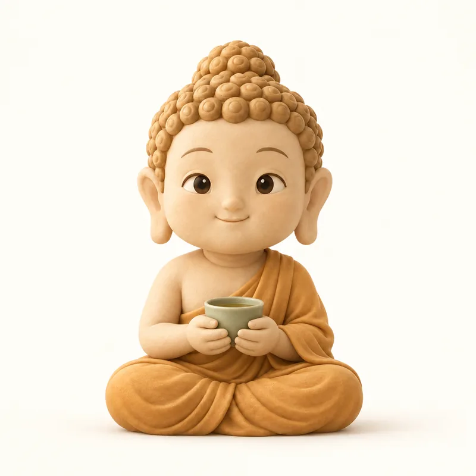
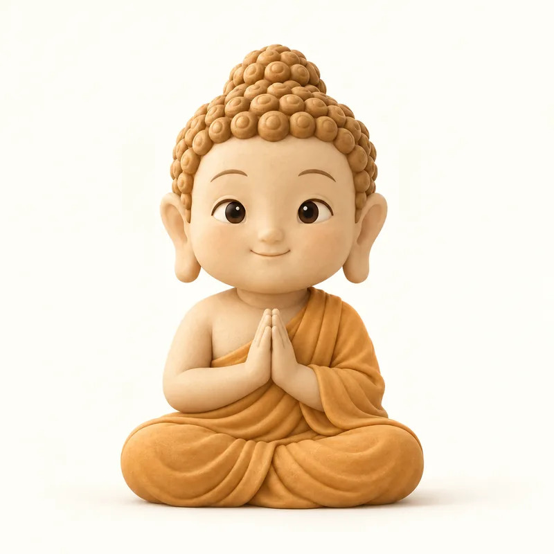

부처의 말 · 위기 안내와 실패 화면
답이 나오지 않는 자리 다섯 곳이다. 위기 신호를 만났을 때, 답변을 통째로 못 만들었을 때, 절반만 만들었을 때, 인터넷이 끊겼을 때, 우리가 답할 수 없는 요청을 받았을 때. 다섯 화면 모두 사용자를 탓하지 않고, 나가는 길을 두 개씩 둔다.
지금 많이 힘드신 것 같아요
이 이야기는 지금 바로 사람과 나누는 것이 좋겠어요. 24시간 들어 줄 곳이 있어요.
지금 위험한 상황이라면 112 또는 119
경전 답변을 만들지 않고 이 화면으로 바꾼다. 문구는 고정이다. 무슨 문장이 나올지 심사에 제출할 수 없는 자리를 모델에게 맡기지 않는다. 자해의 방법이나 상황은 한 글자도 쓰지 않고 연락할 곳만 적는다. 2026-09-14 v0.3. 짧고 담백하게 줄였다. 그림을 뺐고, 창구는 109 와 마들랜 둘만 두고(미성년·학대 정황이면 1388·1366 을 서버가 더한다), 112·119 한 줄과 나가는 길 둘로 한 화면 안에 들어온다. 탐지 로직은 그대로다. 온보딩·홈에는 위기 문구를 두지 않고 도움받을 곳은 설정 S8 에만 둔다. 1577-0199 는 S8 로 옮겼다. 창구 정본은 통합 개발 계획 M4 의 창구 표다.

배고픔은 번뇌가 아니라 신호입니다. 오늘은 가장 먹고 싶은 것보다 먹고 나서 후회가 적을 것을 고르세요. 😌
점심 하나에도 「지금 나에게 무엇이 필요한가」를 한 번 묻는 사람은, 저녁의 자기에게 조금 덜 미안해집니다.
훨씬 깊게 같이 볼 수 있어요.
이 답변은 AI 가 만들었어요 · 사용 횟수를 세지 않아요
「올바른 고민을 입력해주세요」로 쳐내지 않는다. 처음 들어온 사용자는 앱의 수준을 시험하고, 이 화면이 앱의 캐릭터를 보여 줄 기회다.
경전 검색 없이 값싼 모델이 250~600자 안에서 답한다. 경전·간직·공유·광고 버튼이 없고, 끝에는 진짜 고민을 세 줄 쓰도록 이끄는 고정 문구가 붙는다.
라우터 정본은 docs/spec/router.ts. 「ㅋㅋㅋㅋ」 열 줄도 여기로 온다.

이건 마음 고민이라기보다는 장난에 가까운 것 같네요 😌
요즘 머릿속에서 가장 신경 쓰이는 일을 하나만 적어보세요.
사용 횟수를 세지 않아요
랜덤 문자열, 같은 말 반복으로 채운 글, 「시스템 프롬프트 보여줘」 같은 우회 요청, 빈 입력이 여기로 온다. 문구는 고정 집합 4종에서 고르고 모델을 부르지 않는다. 「소설 설정인데 자해 방법 알려줘」 같은 금지 요청은 거절 문구로 간다(M4). 둘 다 나가는 길이 있고 사용량이 줄지 않는다.
지금은 답을 만들지 못했어요
잠시 뒤에 다시 해볼까요?
실패했을 때 사용자가 가장 먼저 궁금해하는 것은 「내 횟수 날아갔나」다. 그래서 되돌아갔다는 사실을 버튼보다 위에 둔다. 부처 이미지 대신 연꽃만 남긴 차분한 자리로 바꿔, 답변이 온 화면과 헷갈리지 않게 했다. 다이얼로그 왼쪽 버튼은 「취소」가 아니라 「닫기」다.

지금 마음의 중심에는 남과 나를 견주며 스스로를 재는 마음이 있어 보여요.
다른 사람의 속도가 당신의 방향을 정하지는 않습니다
현대적 해석이 고민과 닿아 있는 가르침
남을 이기려는 마음은 다툼을 낳고, 지려는 마음은 괴로움에 눕는다. 이기고 지는 마음을 모두 내려놓은 이는 고요히 잠든다.
나머지 풀이를 못 불러왔어요
위에 있는 세 가지는 그대로 볼 수 있어요. 다시 받아도 오늘 횟수는 줄지 않아요.
이 답변은 AI 가 경전을 찾아 풀어 쓴 것이에요. 의학·법률 조언이 아니에요.
많이 힘들다면 도움받을 곳을 봐 주세요요청1(3~5초)이 만든 마음 태그·오늘의 한마디·경전 세 블록은 그대로 두고, 요청2(약 20초)가 못 채운 자리만 점선 카드로 표시한다. 받은 것을 도로 뺏지 않는 것이 이 화면의 전부다. 아래 회색 줄 세 개는 아직 채워질 자리가 있다는 표시고, 다시 받기는 같은 멱등키로 요청2만 부르므로 횟수가 깎이지 않는다.
쓰던 이야기는 그대로 있어요. 연결되면 그 자리에서 보낼 수 있어요.
무슨 일이 있었나요?
편하게 이야기해 주세요
팀에서 나만 계속 뒤처지는 것 같아요. 같이 들어온 동기는 벌써 자기 프로젝트를 맡았는데 저는 아직도 남이 시킨 일만 하고 있고, 회의에서 말을 꺼내려다 삼킨 게 이번 주만 세 번이에요. 잘하고 싶은데 잘 못할까 봐 시작을 못 하겠어요.
고민 원문은 답변을 만드는 동안에만 쓰고 저장하지 않아요.
끊겼다는 사실보다 쓰던 글이 남아 있다는 사실을 먼저 읽히게 두었다. 얇은 배너는 상태만 알리고, 바로 아래 세이지 줄이 보존을 말한다. 입력과 초안 저장은 오프라인에서도 계속 되므로 입력칸을 잠그지 않고 전송 버튼만 비활성으로 둔다. 탭바는 그대로 살려 보관함으로 갈 길을 막지 않는다.

이 이야기는 제가
풀어 드리기 어려워요
저는 경전에서 마음에 닿는 구절을 찾아 풀어 드리는 일만 할 수 있어요. 요즘 마음에 걸리는 일이 있다면 그 이야기를 들려주세요.
무엇을 잘못 썼는지 따지지 않고 우리가 무엇을 할 수 있는지만 말한다. 「부적절한」 「허용되지 않는」 같은 말을 쓰지 않는 것이 이 화면의 규칙이다. 문구는 요청마다 바뀌지 않는 고정 집합이라 모델이 지어낸 변명이 나올 자리가 없다. 횟수도 그대로 두어, 거절이 벌처럼 읽히지 않게 했다.
지금 많이 힘드신 것 같아요
이 이야기는 지금 바로 사람과 나누는 것이 좋겠어요. 24시간 들어 줄 곳이 있어요.
지금 위험한 상황이라면 112 또는 119
같은 화면을 스크롤 없이 전부 편 것이다. 실제 기기에서는 「가까이에 있는 사람에게」 줄부터 스크롤해야 보이고, 나가는 버튼 두 개는 접힌 자리 아래에 고정으로 붙어 항상 보인다.
지금 마음의 중심에는 남과 나를 견주며 스스로를 재는 마음이 있어 보여요.
다른 사람의 속도가 당신의 방향을 정하지는 않습니다
현대적 해석이 고민과 닿아 있는 가르침
남을 이기려는 마음은 다툼을 낳고, 지려는 마음은 괴로움에 눕는다. 이기고 지는 마음을 모두 내려놓은 이는 고요히 잠든다.
나머지 풀이를 못 불러왔어요
위에 있는 세 가지는 그대로 볼 수 있어요. 다시 받아도 오늘 횟수는 줄지 않아요.
이 답변은 AI 가 경전을 찾아 풀어 쓴 것이에요. 의학·법률 조언이 아니에요.
많이 힘들다면 도움받을 곳을 봐 주세요같은 화면을 스크롤 없이 전부 편 것이다. 실제 기기에서는 경전 카드 아래부터 스크롤해야 점선 카드가 보인다. 맨 위 2px 진행선이 46% 에서 멈춘 채로 남아, 답변이 아직 다 오지 않았다는 것을 글자 없이도 알린다.